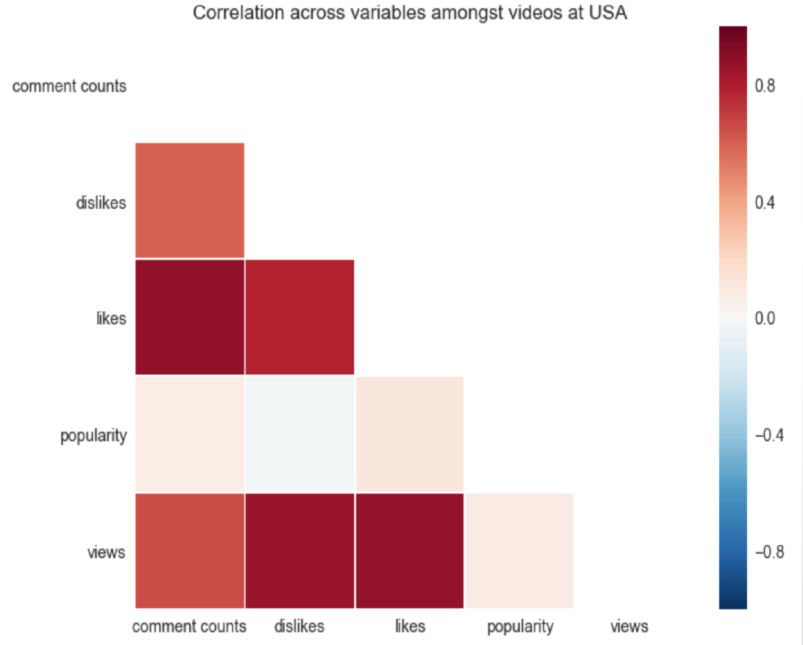
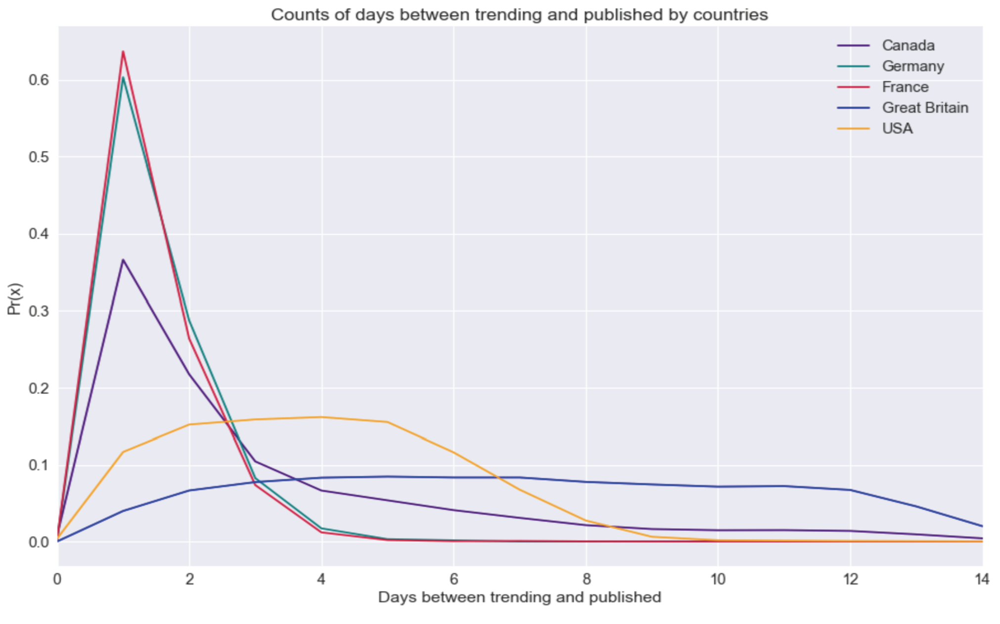

Virality of YouTube videos
This project investigates YouTube videos' attributes to predict whether a given video
will be viral or not. The dataset is collected by connecting to Youtube's
own API, which provides methods to download information on the most viral Youtube videos
sorted by countries. It's an ongoing project but I would like to highlight a few discoveries.

Note that popularity is not an attribute given by Youtube. I computed popularity score based on
the ratio of likes versus dislikes as well as incorporating uncertainity. For more detail of the exact
method, please refer to Wilson Lower Score.
The key takeaway from the above correlation plot is that:
- More likes does NOT imply higher popularity score
- Popularity score has no correlation to any of the attributes above

The probability density curve above highlights counts of days between trending
and published by countries. It is interesting how most viral videos from France
and Germany take 1 day to go from published to viral but the event of any
number of days it takes to go from published to viral is equally likely for videos
from USA and UK. It is not intuitive at all that there can be such
polarity for information that is simply travelling online. My conjecture is
that it takes fewer days for Youtube videos to go from published to viral if it's
originated from countries with homogeneous culture and less diversity such as France
Germany versus USA and UK. There is definitely more work needed to be done but I am
very excited to be able to tell a story with such complex data.